为了保证 Web 应用的安全性，一种合理的思路在于在 TCP/IP 协议栈的各层中加入合适的安全组件。目前已有的方式包括了在网络层的 IPSec，传输层的 TLS/SSL，应用层部署的 Kerberos 和 S/MIME 等。
目前最广泛应用的安全组件还是 TLS 协议，TLS 可以被大多数浏览器和 Web 引擎支持，提供安全的端到端通信服务，而相对来说 SSL 应用较少。
# TLS 结构
TLS 协议实际可以分为两层，如图所示。
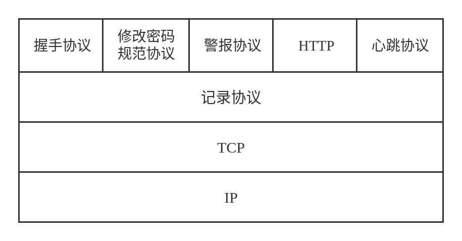
TLS 协议基于传输层的 TCP 之上，其内部分为了两层。第一层是 TLS 记录协议（TLS Record Protocol），用来为上层协议提供保密性和完整性服务。TLS 的高层协议包括了握手协议、修改密码规范协议和警报协议，这些协议用来进行 TLS 交换的管理。心跳协议是 TLS 的一个扩展，增加了连接保活的机制。
TLS 协议给出了连接和会话的定义。连接是提供合适服务类型的一种传输，在 TLS 中连接是一种对等关系，是一个和会话关联的暂时状态。会话是客户端和服务器之间的一个关联，通过握手协议进行创建，定义了一组多个连接共享的安全参数。
一个简单的理解是连接和会话是一个多对一的关系。一个连接属于一个会话，而一个会话可以存在多个连接。
会话和连接都具有一些状态。连接的状态包括了：
- 服务器和客户端随机数：服务器和客户端为每个连接指定的随机数
- 服务器 / 客户端写 MAC 密钥：服务器或者客户端发送数据时 MAC 操作使用的密钥
- 服务器 / 客户端写密钥：服务器或客户端发送自己的数据或者解密对方发来的数据用的密钥
- 初始化向量：使用 CBC 模式的初始化向量，通过 TLS 握手协议进行初始化。后续记录的 IV 由上个记录最后一个密文分组来充当。
- 序号：会话各方为连接收发消息使用的序号
会话的状态包括了：
- 会话标识：服务器用于标识会话状态的一个随机字节序列
- 对等实体证书：对等实体的 X.509 证书，可以为空
- 压缩方法：压缩数据的算法
- 密码规范：规定了数据加密算法和 MAC 计算方法，以及一些加密属性
- 主密钥：客户端和服务器共享的密钥
- 可恢复：标记是否能用这个会话来初始化新的连接
# TLS 协议内容
# TLS 记录协议
TLS 记录协议对数据的处理包括了分段、压缩、加 MAC、加密和增加 TLS 记录头部几个部分。
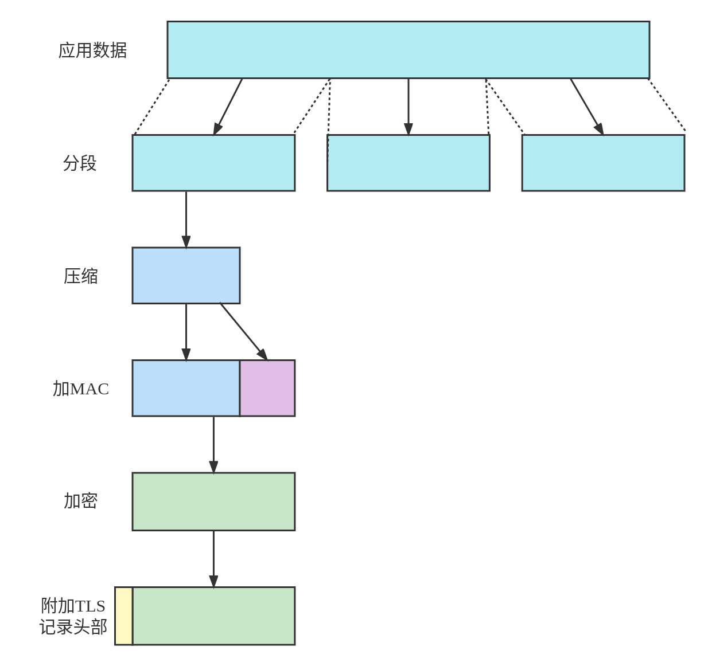
TLS 记录协议首先会对消息进行分段，得到小于等于 214（16384）字节的若干段，接下来通过可选的压缩算法进行压缩，TLS 要求压缩算法结果不能导致数据长度增加超过 1024 字节。
下一步是计算数据的 MAC，使用的是 RFC 2104 定义的 HMAC 算法：
其中 为使用的哈希函数， 为待哈希的消息， 为左侧填充全 0 使得和哈希算法分组等长度的密钥。 和 分别为重复了 64 次的十六进制数0x36 和0x5c。
计算下面的值得到哈希增加在消息的最后：
接下来 TLS 使用对称加密算法加密消息和 MAC，得到密文。TLS 同样也要求分组密码加密之后密文的长度增量不能超过 1024 字节。一个注意点是分组密码需要进行填充，填充块的最大长度为 255 字节。通过 TLS 的填充，可以防范一些对密文长度的分析攻击。
在最后一步，TLS 协议会增加一个 TLS 记录协议头部。这个头部包括了下面的字段：
- 内容类型（1 字节）：封装段的高层协议，包括了
change_cipher_spec(20)、alert(21)、handshake(22)、application_data(23) 等类型。 - 主版本号（1 字节）：使用的 TLS 主版本号。
- 从版本号（1 字节）：使用的 TLS 从版本号。
- 压缩长度（2 字节）：明文段或者压缩之后的段的长度（字节）。
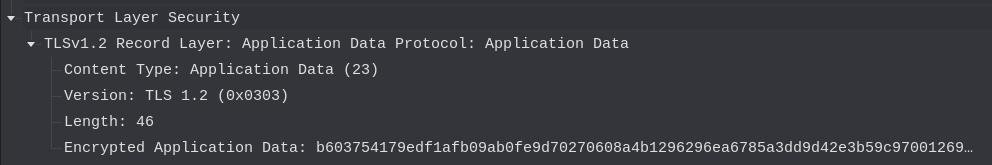
# 修改密码规范协议
修改密码规范协议的的数据载荷部分仅仅包括了一个一字节的值为 1 的消息，用来将当前的会话改为挂起状态用来更新密码套件。
# 警报协议
TLS 警报协议用来将 TLS 相关的警报传达到对方。字段的取值包括了两个字节的类型信息。其中第一个字节取值用来表示警告的严重程度，分为警告 (1) 和致命 (2) 两类。
对于致命警告，连接会被直接结束。同时本次会话其他连接虽然还可以继续进行，但是不能再新建新的连接。
具体的警报类型由 RFC 5246 定义。
# 握手协议
TLS 握手协议允许客户端与服务器互相认证，同时协商加密和 MAC 的算法。这是 TLS 最核心也是最复杂的部分。
握手协议的数据包包括了三个部分：一个 1 字节的类型字段，一个 3 字节的长度字段和通过长度字段标识的数据字段。
TLSv2 握手协议的类型字段定义了 10 种消息类型，分别是：
| 类型名称 | 类型 | 参数 |
|---|---|---|
| 请求 | hello_request | 无 |
| 客户端请求 | client_hello | 版本，随机数，会话 ID，密码套件，压缩方法 |
| 服务器响应 | server_hello | 版本，随机数，会话 ID，密码套件，压缩方法 |
| 证书 | certificate | X.509 证书链 |
| 服务器密钥交换 | server_key_exchange | 参数，签名 |
| 证书请求 | certificate_request | 类型，授权 |
| 服务器响应结束 | server_hello_done | 无 |
| 证书验证 | certificate_verify | 签名 |
| 客户端密钥交换 | client_key_exchange | 参数，签名 |
| 结束 | finished | 散列值 |
服务器和客户端之间建立 TLS 连接的初始交换需要经过四个阶段。
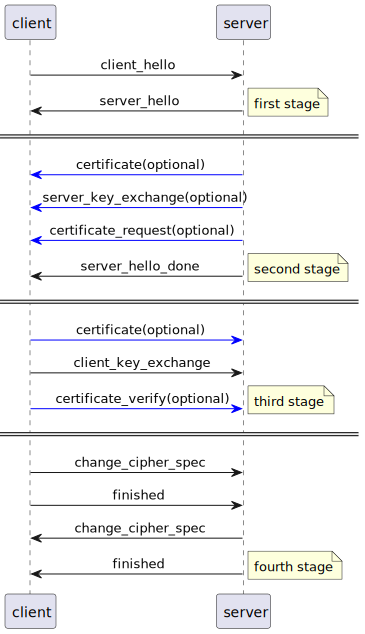
# 第一阶段
在第一阶段，客户端发起建立连接请求，用以发起逻辑连接并建立关联的安全能力。这一段客户端首先发起客户端请求（client_hello），其中包括了下面这些信息：
- 版本：客户端 TLS 的最高版本
- 随机数：客户端生成的随机数，由 32 比特的时间戳和 28 字节的随机数组成，用于密钥交换过程中的防重放攻击。
- 会话 ID：会话标识符，如果非 0 则表示客户端希望更新现有连接的参数或为会话创建新连接，否则表示客户端希望在新会话上创建一条新连接。
- 密码套件：按照优先级降序排列的客户端支持的密码套件列表。
- 压缩方法：客户端支持的压缩方法列表。
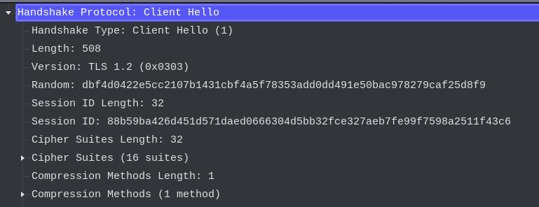
其中密码套件部分每一行为一个密码套件，定义了密钥交换算法和密码规格。
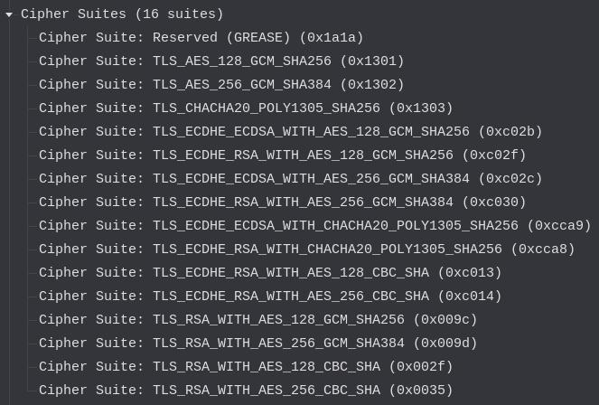
发送完 client_hello 之后，客户端会等待服务器响应 server_hello 。其字段组成和客户端请求的字段一致，同时会确定会话 ID 和使用的密码套件和压缩算法。
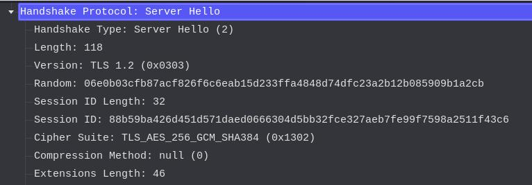
# 第二阶段
第二部分是服务器认证和密钥交换。其中可选的可以对服务器证书进行验证。如果需要对证书进行验证，那么服务器会发送一个 X.509 证书或者证书 X.509 证书链。这个步骤对于使用匿名 D-H 交换之外的密钥交换算法来说是必须的。
除了已经发送了包含固定 D-H 参数的证书或者使用了 RSA 密钥交换方法的情况，如果使用了匿名 D-H、暂态 D-H 或者 RSA 密钥交换，服务器还会发送一个服务器密钥交换 server_key_exchange 消息。
服务器密钥交换 server_key_exchange 消息中会包含 D-H 交换的参数和其签名，签名使用下面的方法进行：
签名中包含了当前会话的一些信息，因此可以防止重放攻击。
如果服务器使用的不是匿名 D-H 算法，服务器可以向客户端请求证书。证书请求 certificate_request 包括两个参数：证书类型和证书机构，其中证书类型指明了证书使用的公钥密码算法和用法，证书机构是一个可以接受的机构名称列表。
第二阶段的最后一条信息服务器结束 server_done 消息。这表示服务器响应 server_hello 相关部分已经结束。
以另外一个例子来看，在 server_hello 阶段，服务器确认使用的密码套件为 TLS_ECDHE_RSA_WITH_AES_128_GCM_SHA256 。接下来的一条 TLS 消息中包括了 certificate 、 server_key_exchange 和 server_done 三个部分。
其中 certificate 部分包括了服务器的证书：
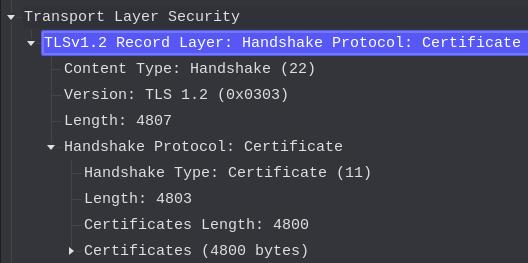
服务器密钥交换消息包括了使用的 ECDH 算法参数，并使用了签名算法对数据进行了签名。
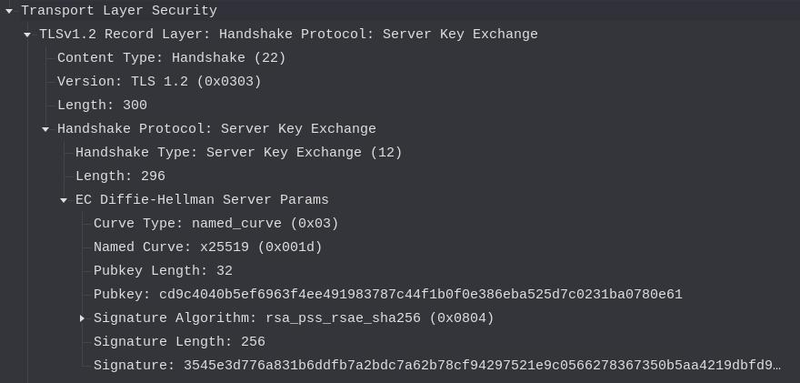
接下来的服务器结束消息没有参数：
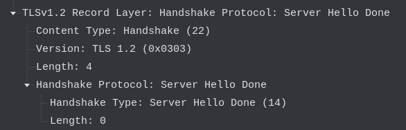
# 第三阶段
这一部分是客户端认证和密钥交换，实际上和第二阶段比较类似。客户端如果有需要会检查服务器的证书是否有效，并检查能否接受 server_hello 部分的参数能否被接受。
如果服务器在上一步中请求证书，那么客户端会发送一条证书 certificate 消息。如果客户端没有证书的话那就会发一条无证书警报 no_certificate_alert 。
接下来是客户端密钥交换 client_key_exchange 。其中的内容由具体实现的加密算法决定。
如果客户端证书具有签名功能，那么客户端可以发送证书验证 certificate_verify 消息以便于验证。
这一部分的一个简单的例子如下，这个 TLS 数据包中包含了一个 client_key_exchange 消息。
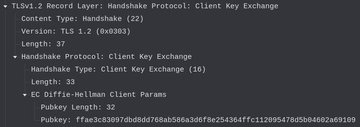
# 第四阶段
最后这一部分是安全连接的建立。客户端会发送一个修改密码规格 change_cipher_sec 的消息。这个消息是通过修改密码规格协议进行发送的。
完成之后，客户端会发送一个结束 finished 消息，用于验证密钥交换和认证过程完成，这个消息是两个哈希的连接：
服务器端同样采取对等的方式完成该阶段。
# TLS 密钥生成和密码参数计算
TLS 协议需要通过安全的方式创建一个用于本次会话的48 字节 的密钥。这通过交换预备主密钥和计算主密钥两个步骤进行。
首先是第一步，交换预备主密钥。对于使用 RSA 的情况，客户端生成一个 48 字节的预备主密钥 ( pre_master_secret )，使用服务器的 RSA 公钥加密之后发送给服务器即可。而对于使用 D-H 交换的情况来说，客户端和服务器之间会使用 D-H 交换生成一个共享的预备主密钥。
在双方获取了预备主密钥之后，就需要通过这个预备主密钥计算出主密钥。计算的方法如下：
master_secret = PRF(pre_master_secret, "master secret",
client_hello.random||server_hello.random)
通过上面的算法会生成一个 48 字节的主密钥。接下来密钥块的计算如下：
key_block = PRF(master_secret, "key expansion",
SecurityParameters.server_random||SecurityParameters.client_random)
通过上面这个函数可以生成 MAC 密钥、会话密钥和 IV 等参数。
上面使用的 PRF 是一个伪随机函数，实际上是调用了 p_hash 函数。
PRF(secret, label, seed) = P_hash(secret, label || seed)
P_hash(secret, seed) = HMAC_hash(secret, A(1) + seed) +
HMAC_hash(secret, A(2) + seed) +
HMAC_hash(secret, A(3) + seed) + ...
其中 A() 函数为：
A(0) = seed
A(i) = HMAC_hash(secret, A(i-1))
# 参考资料
[1] 网络安全基础 —— 应用与标准（第六版），William Stallings.
[2] 密码编码学与网络安全 —— 原理与实践（第八版），William Stallings.